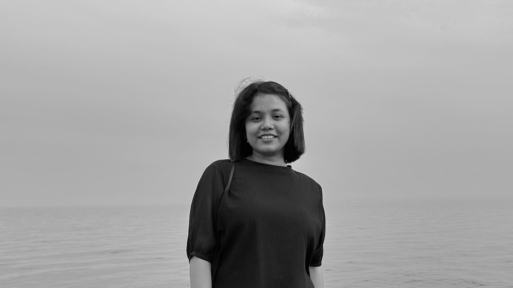

My name is Nusrat Jahan Shanta, a Full-Stack Developer and Game Programmer originally from Bangladesh, now permanently residing in Canada. With over four years of experience in game development using Unity3D, I have recently expanded my expertise to full-stack web development, working with technologies like React.js, Node.js, and MySQL. My passion for technology drives me to continually learn and adapt, whether building immersive gaming experiences or creating user-friendly web applications. I hold a Bachelor of Science in Computer Science and Engineering, as well as a Master of Science in Management Information Systems. I find immense satisfaction in solving complex challenges and delivering impactful digital solutions.


Nimoyd is a sci-fi fantasy sandbox set in 2702. Explore dungeons and cities, dig, craft, and battle while managing your energy and evading dark spirits.I was primarily responsible for implementing and updating the user interface, which includes over 30 screens such as Building Mode, World Creation, and Inventory. Additionally, I participated in bug fixes and code reviews. This project is currently in development and represents the most significant work I have undertaken to date.

Riko: The Adventurer" is a 2D top-down RPG shooting game developed in Unity3D, where the player guides the main character in their quest to become a 7th-grade adventurer by gaining experience. I presented this game as my final year project for my Bachelor of Science degree. All aspects of the game, except for the art and music, were developed by me.

LSD: Last Survival Days was a collaborative top-down survival shooting game project created with the music band Liquid State Drive. In each level, the player must survive until the end of a song from the band's debut album, Tomar Itihash, which serves as the background music. This is the first game in Bangladesh to be based on a music band. As the Game Developer, I collaborated with a Game Artist to bring this project to life.

Lana's Adventure is a 2D platformer developed in Unity3D during my undergraduate years. The game features three distinct character types: Melee, Ranged, and Ranged-Melee.It was developed by a team of two—a Game Developer and a Game Artist—with my primary responsibility being the implementation of all game functionalities. As a beginner, this project provided me with invaluable experience and allowed me to dive deeper into Unity3D. Although it remains a pet project, we may resume development in the near future.

Quiz Race is a puzzle-based autorun game developed in Unity3D, where players must guide a car into the correct lane that matches the right answer. I collaborated with a Game Artist to bring this game to life.

AR Bornoporichoy is an augmented reality app developed in Unity3D to help children learn the Bengali alphabet. I was responsible for implementing the Vuforia SDK and integrating various objects with their animations into the project.

Wood Project is a table-making game where players use tools to cut down a tree, process the wood, and build a table. All objects and animations were created in Unity3D. This was a basic demo project from my internship.

Videos of other projects, such as projects for my clients are included in the link.